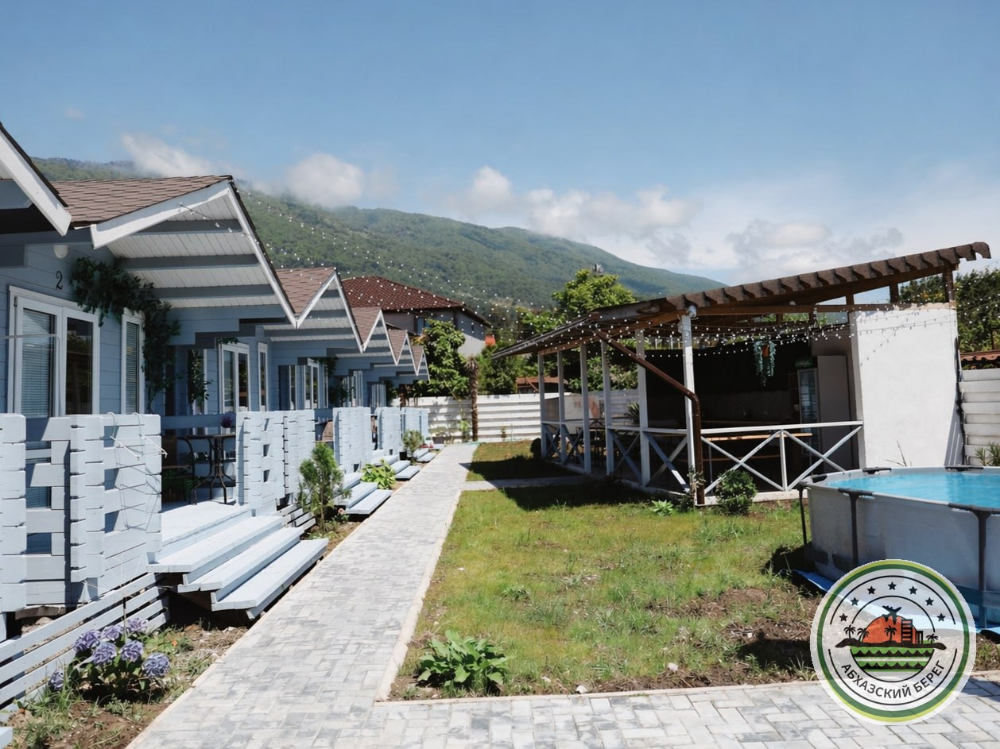
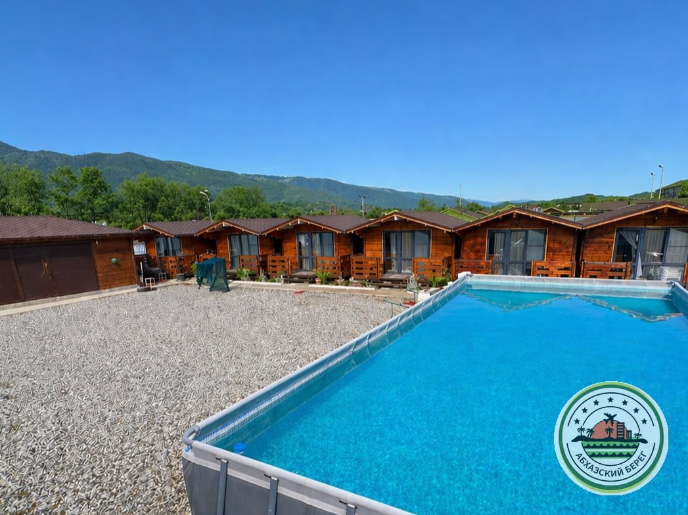

Отели с бассейном
ЛДЗАА

"БЛЭК СИ" отель с бассейном и питанием
🏖️🌲 7 мин до пляжа (сосновый галечный)
бессейн без подогрева

"БУГЕНВИЛЛЕЯ" отель с бассейном
🏖️🌲 5 мин до пляжа (сосновый галечный)
Бассейн с подогревом пресной воды

"МУЛБЕРРИ" с бассейном и кафе
🏖️ 0 мин до пляжа (песок/мелкая галька)
Бассейн с подогревом морской воды

"НАСТА" апартаменты
🏖️ 3 мин до пляжа (песок/мелкая галька)
Бассейн каркасный

"НАСТА" гостевой комплекс
🏖️ 3 мин до пляжа (песок/мелкая галька)
Каркасный бассейн небольшой

"СИРИУС"
🏖️🌲 1 мин до пляжа (сосновый галечный)
Бассейн (строится), с подогревом

"ФЕНИКС" дом под ключ
🏖️ 14 мин до пляжа (песок)
Каркасный бассейн
ПИЦУНДА

"АССИР ПИЦУНДА" гостевой дом в центре
🏖️15 минут до пляжа (сосновый галечный)
бассейн без подогрева

"БЕЛАЯ ЛОШАДЬ" эко-комплекс с бассейном и собственной конюшней
🏖️🌲 15 мин до пляжа (сосновый галечный)
Подогреваемый бассейн, с детской зоной

"МИРА" домики и номера у озера
🏖️🌲 23 мин до пляжа (сосновый галечный)
Бассейн каркасный

"САН ПИНО" домики деревянные с бассейном
🏖️🌲 5 мин до пляжа (сосновый галечный)
Бассейн с подогревом пресной воды

"ФАЗЕНДА" двухэтажные коттеджи с бассейном и питанием
🏖️🌲7 мин до пляжа (сосновый галечный)
Бассейн с подогревом пресной воды

"ФАЗЕНДА" отель с бассейном и питанием
🏖️🌲7 мин до пляжа (сосновый галечный)
Бассейн с подогревом пресной воды

"ЭКО ХАУС ПИТИУНТ" домики с бассейном
🏖️🌲7 мин до пляжа (сосновый галечный)
Бассейн (без подогрева)
ГАГРА

"АМОР" апартаменты с кухней и бассейном
🏖️ 4 мин до пляжа (галечный)
Бассейн с подогревом

"АМОР" домики с бассейном
🏖️ 4 мин до пляжа (галечный)
Бассейн с подогревом

"БОХО" коттеджи у моря с бассейном и баней
🏖️ 0 мин до пляжа (галечный)
Бассейн с подогревом и баня на берегу моря

"ВИЛЛА ЛЕОНА" люкс-отель
🏖️ 4 мин до пляжа (галечный)
Бассейн с подогревом

"КИРА" гостевой комплекс
🏖️ 6 мин до пляжа (галечный)
Каркасный бассейн

"ПАРУС" видовой отель с бассейном и столовой
🏖️ 4 мин до пляжа (галечный)
Бассейн с подогревом пресной воды

"САНСЕТ" эко-домики
🏖️ 15 мин до пляжа (галечный)
бассейн каркасный для детей
АЛАХАДЗЫ

"АИША" отель с бассейнами
🏖️ 10 мин до пляжа (галечный)
Три бассейна с подогревом

"АКВА" отель с бассейном и завтраками
🏖️ 10 мин до пляжа (галечный)
Бассейн с подогревом

"ГРЕЙ ХАУС" домики с бассейном
🏖️ 9 мин до пляжа (галечный)
Каркасный бассейн

"ДИАР" домики с бассейном
🏖️ 8 мин до пляжа (галечный)
каркасный бассейн без подогрева

"РУСАНА" эко-домики
🏖️ 13 мин до пляжа (галечный)
Каркасный бассейн

"ТИХИЙ ЗАКАТ" домики с бассейном
🏖️ 6 минут до моря, пляж галечный
бассейн без подогрева
ГУДАУТА

"ФУЛЛ ХАУС" домики с бассейном
🏖️ 15 мин до пляжа (галечный)
Бассейн (без подогрева)

"ЭСМА" домики с бассейном в Гудауте
🏖️ 7 мин до пляжа (галечный)
Каркасный бассейн 5 на 3 метра

"ЭСМА" - студия
🏖️ 7 мин до пляжа (галечный)
Каркасный бассейн 5 на 3 метра
НОВЫЙ АФОН

СУХУМ

"АМИНА" дом под ключ
🏖️ 5 мин до пляжа (песок/мелкая галька)
Каркасный бассейн

"МАЯК" гостевой дом
🏖️ 10 мин до пляжа (галечный)
Каркасный бассейн